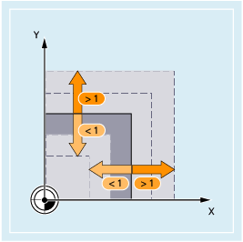
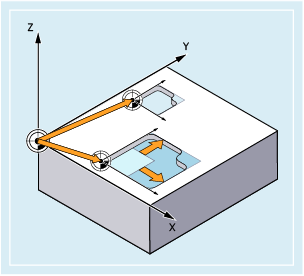
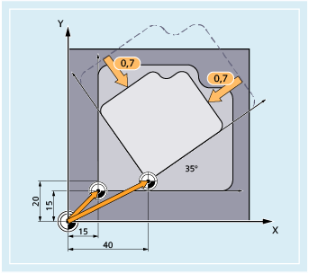

Mit den Befehlen SCALE und ASCALE können für alle Bahn-, Synchron- und Positionierachsen Maßstabsfaktoren zum Vergrößern oder Verkleinern in Richtung der jeweils angegebenen Achsen programmiert werden. Dadurch ist es möglich, geometrisch ähnliche Formen oder unterschiedliche Schwundmaße bei der Programmierung zu berücksichtigen.

| Absolutes Vergrößern / Verkleinern | |
Bezugssystem: | Aktuelles mit G54 ... G57, G505 ... G599 eingestelltes Werkstückkoordinatensystems (ENS) | |
Alleine im Satz: | Ja | |
| Additives Vergrößern / Verkleinern | |
Bezugssystem: | Aktuell eingestelltes oder über eine Frame-Anweisung zuletzt programmiertes Werkstückkoordinatensystem | |
Alleine im Satz: | Ja | |
| Maßstabsfaktoren in Richtung der angegebenen Geometrieachsen (Bahn-, Synchron- und Positionierachsen) Beispielhaft soll folgende Festlegung gelten:
Für jede Geometrieachse kann ein eigener Maßstabsfaktor angegeben werden, um den vergrößert oder verkleinert werden soll. | |
| Achtung |
Absolute Frame-Anweisungen löschen alle programmierten FramesSoll ein programmierbarer Frame auf bestehenden Frames aufbauen, ist statt der absoluten die additive Frame-Anweisung zu programmieren. |
| Achtung |
Verzerrung durch unterschiedliche MaßstabsfaktorenUnterschiedliche Maßstabsfaktoren führen zu einer Verzerrung der Ursprungsform! Ist eine Verzerrung nicht beabsichtigt, muss mit den gleichen Faktoren skaliert werden, wie z. B. bei der Skalierung von Kreisinterpolationen. |
Skalierung einer Kreisinterpolation mit gleichen Maßstabsfaktoren
| Hinweis |
Nullpunktverschiebung nach SkalierungWenn nach SCALE eine Nullpunktverschiebung mit ATRANS programmiert wird, dann werden die Verschiebewerte ebenfalls skaliert. |
Im folgenden Beispiel werden zwei Taschen mit identischer Form, aber unterschiedlicher Größe bearbeitet. Die Bearbeitungsfolge ist im Unterprogramm abgelegt. Durch Nullpunktverschiebung werden die jeweils benötigten Werkstücknullpunkte gesetzt, durch Skalierung wird die Kontur vergrößert.
Auch in diesem Beispiel kommen zwei Taschen mit identischer Form aber unterschiedlicher Größe im Werkstück zweimal vor, jedoch zueinander verdreht. Die Bearbeitungsfolge ist im Unterprogramm abgelegt. Durch Nullpunktverschiebung und Rotation werden die jeweils benötigten Werkstücknullpunkte gesetzt, durch Skalierung wird die Kontur verkleinert.
| Programmcode | Kommentar |
|---|---|
| N10 G17 G54 | ; Arbeitsebene X/Y, Werkstücknullpunkt |
| N20 TRANS X15 Y15 | ; Absolute Verschiebung |
| N30 L10 | ; Große Tasche fertigen |
| N40 TRANS X40 Y20 | ; Absolute Verschiebung |
| N50 AROT RPL=35 | ; Drehung in der Ebene um 35° |
| N60 ASCALE X0.7 Y0.7 | ; Maßstabsfaktor für die kleine Tasche |
| N70 L10 | ; Kleine Tasche fertigen |
| N80 G0 X300 Y100 | ; Wegfahren |
| N90 M30 | ; Programmende |
Siehe auch:
Programmierbare Frames (Übersicht)